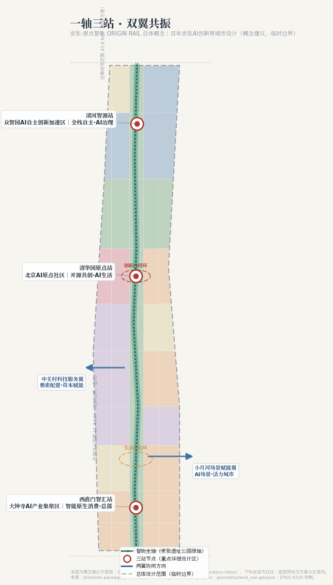
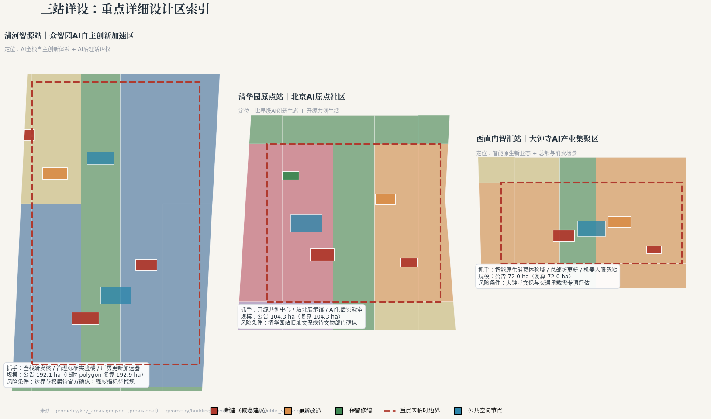
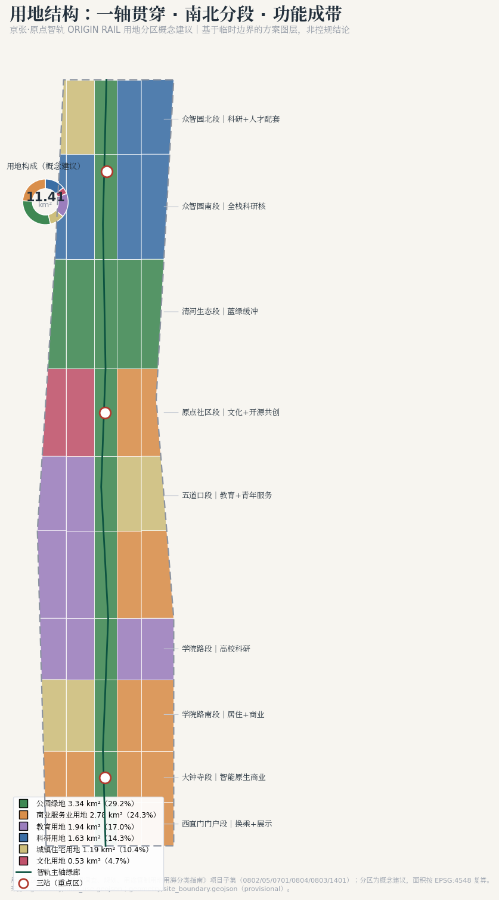
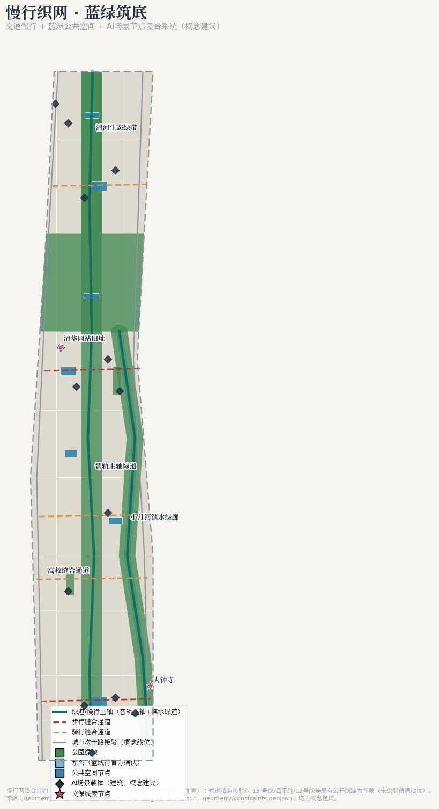

总览地图概念结构：一轴三站 · 双翼共振

三层范围战略—设计—详设逐级传导（面积：公告值/临时复算值）
统筹研究范围
北至北五环、东至京藏高速、南至西直门外大街、西至万泉河路；产业与未来城市战略研究。
总体设计范围
京张遗址公园周边1—2km城市地区与产业区；控规深度城市设计（概念建议）。
重点区域范围
众智园（192.1ha）+ AI原点社区（104.3ha）+ 大钟寺（72.0ha），规划综合实施方案深度。
重点区域三站详设：一站一类核心功能

清河智源站 · 众智园
AI全栈自主创新体系 + AI治理话语权：全栈研发核、治理标准实验楼、厂房更新加速器、清河人才公寓。
清华园原点站 · AI原点社区
世界级AI创新生态 + 开源共创生活：站址展示馆（保留修缮）、开源共创中心、AI生活实验室、原点广场。
西直门智汇站 · 大钟寺
智能原生新业态：智能原生消费体验塔、总部坊更新、机器人测试服务站、智汇广场。
用地分区50 个分区单元无缝覆盖临时边界（MNR 项目子集编码）

交通慢行东西缝合 · 南北贯通

廊道构成
智轨主轴绿道（约9.6km）+ 小月河滨水绿道 + 5 条东西缝合通道（步行/骑行）+ 两侧次干路接驳（概念线位）。
蓝绿公共空间
智轨绿轴 + 清河生态绿带 + 小月河绿廊 + 2 处口袋公园；8 处公共空间节点按「站—场—廊」组织。
文保与蓝线
清华园站旧址、大钟寺文保范围与小月河/清河蓝线以官方公布为准。
建筑与更新项目14 处概念建议建筑 · 逐栋拆改留意向
| 编号 | 名称 | 类型 | 拆改留意向 | 所属 |
|---|---|---|---|---|
| B-001 | 众智园全栈自主创新1号研发核 | AI研发 | 新建（概念） | 众智园 |
| B-002 | 众智园AI治理与标准实验楼 | 实验室 | 新建（概念） | 众智园 |
| B-003 | 众智园加速器（既有厂房更新） | 孵化器 | 更新改造 | 众智园 |
| B-004 | 清河人才公寓 | 人才公寓 | 新建（概念） | 众智园 |
| B-005 | 原点社区开源共创中心 | 混合功能 | 新建（概念） | 原点社区 |
| B-006 | 清华园站旧址展示馆 | 文化展示 | 保留修缮 | 原点社区 |
| B-007 | 原点社区AI生活实验室 | 实验室 | 更新改造 | 原点社区 |
| B-008 | 原点社区开发者驿站 | 社区服务 | 新建（概念） | 原点社区 |
| B-009 | 大钟寺智能原生消费体验塔 | 混合功能 | 新建（概念） | 大钟寺 |
| B-010 | 大钟寺AI企业总部坊（既有更新） | 办公 | 更新改造 | 大钟寺 |
| B-011 | 大钟寺机器人测试服务站 | 交通接驳 | 新建（概念） | 大钟寺 |
| B-012 | 西直门智轨门户换乘接驳站 | 交通接驳 | 新建（概念） | 门户段 |
| B-013 | 五道口青年创新驿站 | 孵化器 | 更新改造 | 五道口段 |
| B-014 | 学院路高校联合实验中心 | 教育科研配套 | 更新改造 | 学院路段 |
更新项目分期：一期三站启动区 369.3ha（2026—2028 概念建议）→ 二期轴线贯通与南段织补 572.6ha（2029—2031）→ 三期北段完善 199.4ha（2032—2035）。不构成开发时序承诺。
AI 场景12 张场景卡 · 3 张产业测试验证 · 6 类用户画像
测试验证（★沙盒管理）
低速机器人配送测试 · AI治理沙盒演示 · 自动驾驶接驳测试：范围公示、第三方评估、可中止回退。
公共生活场景
京张文化AI导览 · 慢行友好度感知 · AI生活实验室 · 健康服务导航 · 公共安全运营复核 · 生态观测运维。
产业服务场景
企业服务Copilot · 智能原生消费体验 · 开源共创工作坊：数据最小化、人工复核、运营主体明确。
画像覆盖：AI研究员 / 独立开发者 / 企业技术负责人 / 在地居民 / 青少年学生 / 国际访客。全部场景不使用非公开数据与个人隐私，保留人工复核。
核心指标与 metrics.json 一致，可在 EPSG:4548 下复算
总用地面积
临时边界复算，公告 11.4 km²
绿地率
green_space ÷ site
公共空间比例
public_space ÷ site
慢行廊道
greenway+步行+骑行
建筑基底（概念）
14 处概念建筑
重点区面积
公告 368.4 ha
场景卡 / 画像
含 3 张测试验证场景
地标 / 案例 / 活动
agent.2/4/6 硬指标
待确认控规指标 容积率、建筑高度、建筑密度、法定绿地率、退线：metrics.json 中 status=unknown，不伪装为结论。
任务覆盖公告 1.3/1.4/1.5（17 条）+ 智能体任务（6 条）全响应
1.3.1 创新生态1.3.2 新型城市形态1.3.3 高品质城区 1.4.1 统筹研究范围1.4.2 总体设计范围1.4.3 重点区域范围 1.5.1.1—1.5.1.2 统筹研究任务1.5.2.1—1.5.2.5 总体设计任务1.5.3 三处重点区详设 agent.1 概念与命名agent.2 创新生态设计agent.3 AI+场景 agent.4 朝圣地标agent.5 文化叙事agent.6 长期运营
逐条证据（章节+图层+指标+图纸+自检项）见 compliance_matrix.json。
自检状态提交前完整自检
边界可信性
provisional 边界全程标注，未冒充官方红线（BOUNDARY_TRUST / KEY_AREAS_TRUST）。
用地拓扑
50 个分区单元无缝无叠覆盖临时边界（LAND_USE_TOPOLOGY）。
可视化合规
离线静态 HTML，无外部资源、无 iframe、无远程请求（VISUAL_STATIC）。
指标一致性
本页 data-metric 与 metrics.json 一致；强度指标 unknown 明示。
来源全部资料可追溯
- 北京市规划和自然资源委员会海淀分局《百年京张AI创新带城市设计国际方案征集资格预审公告》（2026-05-09，官方公开）。
- 面向智能体的开源征集任务书摘录（用户提供清权，agent_taskbook.json）。
- 临时粗略边界 provisional_boundaries.geojson（仓库维护者推定，official_boundary=false）。
- 本地标准快照：城市设计管理办法、控规编制审批办法、用地用海分类指南、设计文件编制深度规定。
- data/source_registry.json 公开资料登记表；data/processed/agent_fact_pack.md 导航层。
假设待确认事项全披露
- A-BOUNDARY-001：临时边界仅用于生成/展示/自检，官方红线发布后整包重算。
- A-CONTROLS-001：控规条件、道路红线、权属、市政管线待官方附件确认。
- A-HERITAGE-001：清华园站旧址、大钟寺文保范围以文物部门公布为准。
- A-RENEWAL-001：拆改留意向无权属与测绘支撑，待资料确认。
- A-TRANSIT-001：不提供轨道线位、站位与工程可行性结论。
- A-OPS-001：活动与运营机制均为设想，不构成政府承诺。